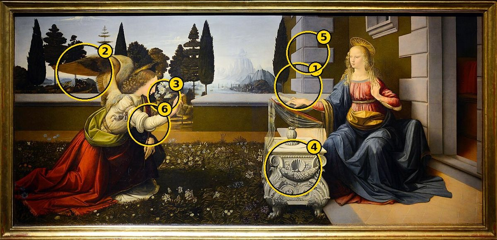

Hidden in the Frame · Uffizi Gallery, Florence
Annunciation
Leonardo da Vinci · c. 1472–76 · Oil and tempera on panel · Room 15

The story
The angel Gabriel comes to Mary and announces that she will bear the Son of God. Leonardo was about 20 and still an apprentice in Verrocchio's workshop. Only in 1869 was the painting recognised as his. Even here you can see how he looks at the world differently from everyone else.
Details to look for
- Mary's right arm looks too long, and she sits oddly far from the lectern. The painting originally hung where it was seen from the lower right – stand to the side and the perspective suddenly works. Her hand rests on a book: by tradition she was just reading the prophecy that a virgin would bear a child – and now its fulfilment stands before her.
- The angel's wings are studied from real birds' wings, short and powerful like a bird of prey's. Another painter later lengthened them. The angel kneels on the meadow and casts a real shadow – no ghost, he is really there.
- The lily in his hand stands for Mary's purity.
- The lectern is modelled on a Medici tomb made by Leonardo's master Verrocchio – a bow to his teacher.
- In the background, mountains and a harbour dissolve in bluish haze. The further away, the paler – Leonardo observed how air swallows colour. This is the beginning of his famous soft manner.
- The low wall separates the garden from the world beyond. The enclosed garden was an old symbol of Mary's virginity.
What it says
A divine moment, but in a closely observed, real world. Here you see a genius who would rather look than follow rules.
Open the full guide – zoom, audio guide, German & Japanese →